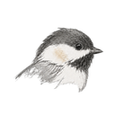

Chickadee
reads pages aloud, entirely on your machine
Voice
af_heart — A
af_bella — A−
af_nicole — B−
af_aoede — C+
af_kore — C+
am_michael — C+
am_puck — C+
am_fenrir — C+
bf_emma — B−
bf_isabella — C
bm_george — C
bm_fable — C
Default speed
0.9×
1×
1.25×
1.5×
1.75×
2×
Read this page
⌥
R
read
⌥
P
play / pause
Right-click any word →
Read aloud from here
Nothing leaves your machine.
Voice model (~310 MB) downloads once, then works offline.